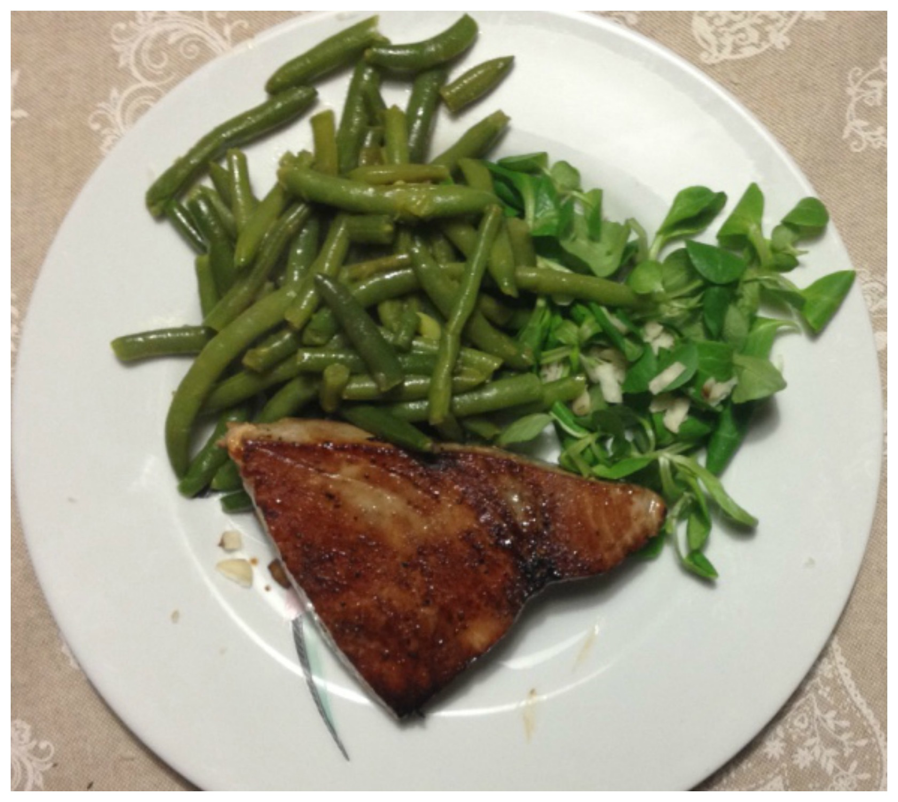
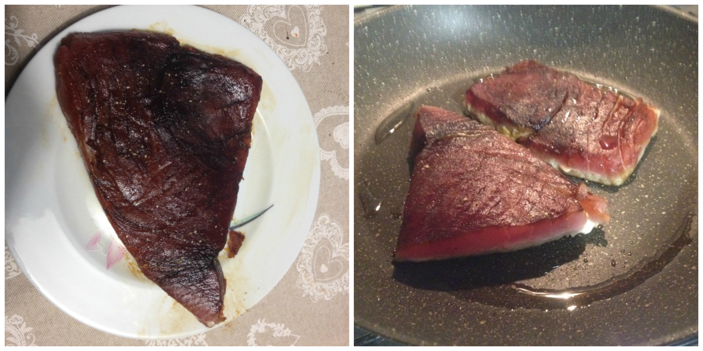
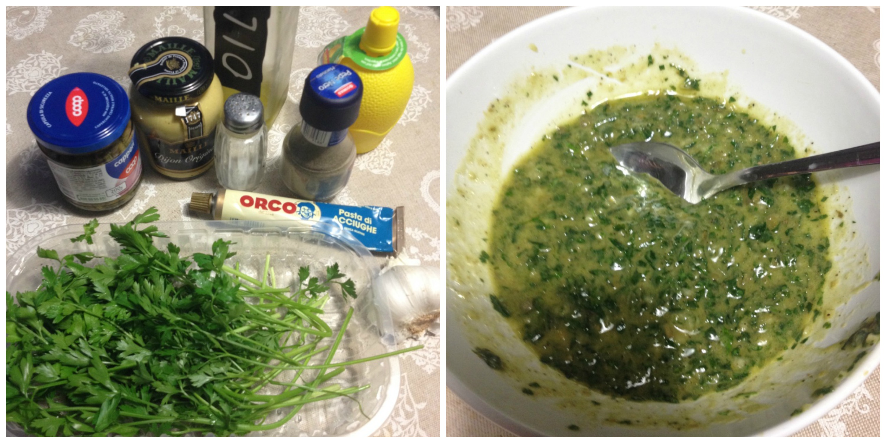

Tuna with green sauce¶

- Serves: 2
- Type: main
Ingredients¶
- 2 tuna filets
- 3 tablespoon soy sauce
- Salt and pepper to taste
- 100 grams chopped fresh parsley leaves
- 4 tablespoons lemon juice
- 1 tablespoon cappers
- 1 teaspoon anchovy paste
- 2 tablespoon dijon mustard
Steps¶
Smear the tuna filets with soy sauce, salt and pepper. Marinate for a least 10 minutes
Heat a little olive oil in a fry pan and cook the tuna filets as your preference (raw, midd cooked)
Preparing the tuna filets
Prepare the sauce: place in a bowl the chopped parsley leaves, lemon juice, olive oil,dijon mustard, anchovy paste and cappers, salt and pepper, mix with a mixer or blender.
Pour a few spoons of green sauce on the fried tuna filets.
Preparing the green sauce
Can be served with¶
- Green beans sauté
- white rice